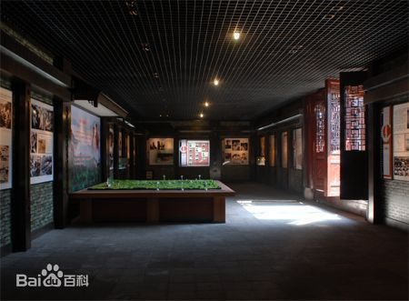
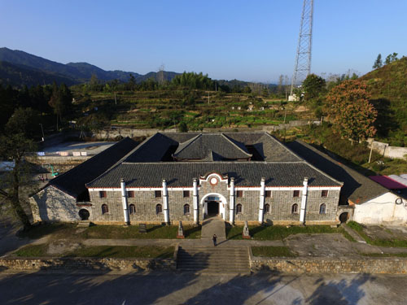

六安：探索革命先烈的源泉
-
.jpg)
独山苏维埃城
红色六安，裕安为荣。六霍起义纪念塔这里是六霍起义的策源地、皖西革命的主战场、刘邓大军千里跃进大别山的落脚地、大别山红旗不倒的中心地、安徽红色区域中心重要组成部分，留下了众多的革命旧址和丰厚的红色文化。走出了中国33位无产阶级军事家之一许继慎、革命文学家蒋光慈、知名红军女战士汪荣华（刘伯承元帅夫人）、周东屏（徐海东大将夫人）和建国后安徽首任省长黄岩等。在血雨腥风的革命岁月里，裕安有10万子弟争当红军，13万儿女为国捐躯，哺育出32位开国将军，是全国著名十大将军县区之一。红色裕安，独山为最。1929年11月8日，这里爆发了六霍起义标志性事件——独山暴动，创造了六安乃至安徽的“四个第一”：即打响了六霍起义第一枪；组建了安徽第一支红军游击纵队；建立了皖西第一个工农民主政权（六安三区工农革命委员会），是大革命失败后中国共产党领导下安徽境内规模最大的农民起义。
-
金寨红军广场
金寨红军广场是在金寨县革命博物馆和烈士陵园的基础上扩建而成的。将过去封闭式的博物馆和陵园，扩建成开放式样红军广场，将位于纪念碑后面的红军纪念堂拆除重建，形成了现在的红军广场，成为教育、休闲和旅游三位一体的公共场所。金寨红军广场是金寨革命烈士陵园二期改造工程重要组成部分，2007年9月开工建设，建设面积1.9万平方米，投资2250万元，其中包括广场、上山台阶步道、旅游厕所、牌楼、绿化、照明、挡土墙和雕塑等工程。 近期，金寨县又投入资金2300万元，组织实施了烈士陵园其它改造工程，改造革命博物馆展室并重新布展，重建红军纪念堂，建设洪学智将军纪念碑，整修烈士塔和红军烈园，进一步展示“千里跃进，将军故乡”主题。整修一新的烈士陵园将更加凸x显全国爱国主义教育示范基地和全国红色旅游经典景区的新形象。2008年10月2日，洪学智上将的骨灰也正式安放于红军广场之上。金寨县红军广场旅游景区包括革命烈士纪念塔、金寨县革命博物馆、红军烈士墓园、红军广场、洪学智将军纪念碑、金寨县红军纪念堂等六个主要景点，形成了以烈士纪念中心融塔、馆、堂、碑、墓园、广场为一体，具有深厚的红色革命文化底蕴，与绿色山水景观紧密相连，具有山区特色的红色旅游景区，年接待参观者50万人次。
-
.jpg)
六安市大别山革命历史纪念园
大别山革命历史纪念馆位于纪念园东北区域，是由原皖西烈士陵园的将军馆、陈列馆拆并重建的新馆，庄重典雅，与周围的绿树、碧水、建筑物浑然和谐，是市委、市政府精心打造的集“生态化、园林化、景观化、人文化”为一体的“城市名片”重要组成部分。纪念馆建设投资600多万元，于2006年元月21日落成开放。馆内以大别山叙事说人为主，分“辉煌历史、将军摇篮、浩气长存、红韵流长”4大版块和“名人荟萃、星火燎原、红旗飘扬、抗日烽火、千里跃进、将军风采、浩气长存、红韵流长”8个单元。采用沙盘、文物、雕塑、图片、油画、文字、场景等形式，运用声光电等现代高科技手段，展示大别山区特别是皖西地区优秀儿女在各个历史时期不屈不挠、前仆后继的革命精神。一层陈展以大别山地区党史、军史内容为主，分别展出有董必武、许继慎、徐向前、郭述申、李先念、高敬亭等15位名人事迹和从大别山走出的341位将军名录。二层陈展以皖西地区107位著名烈士事迹和中央领导关怀下的六安市巨大变化为主，以及30册烈士英名录档案、近千件烈士遗物。同时展出的还有党和国家领导人题词、将军墨宝、著名烈士诗抄、国际友人赠言，以及“淠史杭工程”、“六安新貌”等皖西人民战天斗地的丰功伟绩。
-

霍邱县烈士陵园
霍邱县烈士陵园位于霍邱县城关镇东城区，占地面积24亩，是为了纪念红25军“霍邱保卫战”，1964年经南京军区原司令员许世友将军建议，报省人民委员会批准，于1965年兴建而成。原烈士陵园只有一座革命烈士纪念塔，塔底边长49米，塔身高21米，加塔顶红星闪耀的五星红旗，塔高共26.6米，塔身正面，镶嵌着老一辈无产阶级革命家徐向前元帅亲笔题写的“霍邱县革命烈士纪念塔”塔名。2008年，陵园进行了重新规划，设置了中心纪念塔区、追思缅怀区、休闲游览区和综合服务区四个区域；新建了革命历史陈列馆、革命历史浮雕纪念碑、革命烈士英名碑、铭志亭、清风林、思廉廊、综合服务楼等纪念建筑、教育场所和服务设施；重新装修了灵通桥、追思亭和景仰亭等，使烈士陵园的面貌焕然一新，功能显著增强，成为告慰先人、激励今人、教育后人的教育场所，是开展革命传统教育和爱国主义教育的重要阵地，在未成年人思想道德教育中发挥了重要作用。霍邱县烈士陵园是国家3A级旅游景区。，始建于1965年，是为了纪念历次革命战争中牺牲的革命烈士而兴建，徐向前元帅亲笔题写了“霍邱县革命烈士纪念塔”。
-
.jpg)
舒茶纪念馆
舒茶纪念馆位于舒城县舒茶镇，2009年9月16日正式向游人开放。1958年9月16日，伟大领袖毛主席亲临舒茶视察，并发出“以后山坡上要多开辟茶园”的伟大号召，50多年来，舒茶人民响应主席号召，开拓创新，求真务实，团结奋进，在社会主义新农村建设中取得了令人瞩目的成就。为纪念毛主席视察舒茶，舒茶镇党委、政府积极对上争取，落实革命老区项目建设资金，邀请安师大、省博物馆专家学者实地勘察、论证，编制了《毛主席视察舒茶纪念馆旅游规划》和《布展方案》，经过半年的紧张施工，时值毛主席视察舒茶51周年之际，2009年9月16日，焕然一新的毛主席视察舒茶纪念馆正式开馆并对外开放。舒茶人民将按照开发和保护并重的原则，保护和利用好革命历史文化遗产，使之成为重要的爱国主义教育基地，成为红色旅游的一大精品，以此加强革命传统和爱国主义教育，增强广大党员和群众、特别是青少年的爱国情感，弘扬和培育以爱国主义为核心的民族精神
-

金寨县红25军、红28军军部旧址
金寨县红25军、红28军军部旧址于2009年5月6日“立夏节、六霍起义”胜利80周年之际建成并对外开放。红25军军政机构旧址以丰富翔实的史料，全面展示红25军的辉煌历程。红28军建立、重建、再建为主线，突出红28军重建及战斗过程。红25、28军合编旧址：位于金寨县汤汇乡豹迹岩村胡氏祠。胡氏祠1934年4月红25军和红28军顺利会师后，在这里完成了整编。后红军由徐海东等指挥，于1935年9月16日胜利到达永坪镇与刘志丹领导的红26军、红27军会师，成为长征到达陕甘根 据地的第一支红军，被誉为“长征先锋”。旧址现有房屋12间，至今保存有极为珍贵的红军标语。其中一侧墙上写着“活捉匪首刘镇华”的标语，署名是“红28军政治部”。在胡氏祠的另一侧墙壁上，还有这样的红军语：“坚决恢复皖西北的苏区！红28军 政治部”、“反对-，反对官长，不打苏区的工农”等。1981年9月公布为省级重点文物保护单位。旧址现有房屋12间，至今保存有极为珍贵的红军标语。其中一侧墙上写着“活捉匪首刘镇华”的标语，署名是“红28军政治部”,红25军军政机构旧址以丰富翔实的史料,全面展示红25军的辉煌历程。
-

刘邓大军千里跃进大别山前方指挥部
刘邓大军千里跃进大别山前方指挥部位于金寨县天堂寨镇，1947年6月30日，刘邓大军遵照中央指示，从鲁西南重镇菏泽出发，于8月27日千里跃进大别山，犹如一把尖刀插入敌人的心脏，有效地牵制了国民党，当年12月30日，将前方指挥所设在下楼房的周宅。为再现刘邓大军千里跃进大别山的光辉历史和艰苦历程，进一步挖掘“红色”文化，使之与天堂寨绿色资源相呼应，促进地方经济发展，经六安市委市政府决定，在天堂寨易地重建刘邓大军千里跃进大别山前方指挥部。项目的选址在与旧址地理环境相似的景区大门500米处，与建成的大别山国家地质公园博物馆隔路相望、相互呼应。展览区分刘邓大军千里跃进大别山厅、作战会议厅和金寨籍开国将军厅，对刘伯承、邓小平等首长在大别山期间的生活起居场景进行布置。展厅里的图片、文字、实物不仅丰富，而且集中、全面。主体建筑按照原址的布局进行设计和建设的，再现了原址的“秦砖、汉瓦、马头墙”徽派建筑风格，整体一层局部两层，砖木结构，青砖铺地；五进房屋、配以厢房，达到了 “走马转楼不湿脚”的效果和意境。进入刘邓大军前方指挥部，展现面前的就是一幅波澜壮阔的解放战争画卷.
-

霍山县安徽红色区域中心纪念园
9月2日，坐落于安徽霍山县城关的安徽红色区域中心纪念园隆重开园。霍山是皖西老根据地，鄂豫皖革命根据地的重要组成部分，安徽红色区域中心。土地革命时期，霍山在安徽革命斗争史上创下了“四项第一”。即：1929年5月，刘淠西等人在安徽省第一次发动诸佛庵民团起义，拉开了六霍起义的序幕，接着组建了安徽第一支正规红军——中国工农红军第11军 33师，1930年 4月，成立了安徽省第一个苏维埃政府——霍山县苏维埃政府，成为安徽省第一个全境赤化县。为缅怀先烈，激励后人，霍山县于1986年兴建了霍山县烈士陵园，该园被列为安徽省重点烈士纪念建筑物保护单位、安徽省爱国主义教育基地。去年，按照“集中展示、分散保护、红绿古结合”的旅游发展思路，该县着手兴建了“安徽红色区域中心纪念园”。纪念园占地17.1公顷、总投资2500多万元，总建筑面积800平方米，共分“星火燎原、红旗飘扬、共御外侮、逐鹿中原、红源流长”五个部分，计展出霍山知名革命烈士像、旧址等图片850多张，图表近100张，馆藏大刀、长矛、手枪等革命文物100余件，书画作品30余件。同时，原烈士陵园生态环境幽静，位置比较适中，将此扩建为红色区域中心纪念园.
-

张店战役纪念馆
张家店战役纪念馆是纪念刘邓大军千里跃进大别山的“第一馆”，是六安市九大重点红色旅游建设项目之一。2016年12月，张家店战役纪念馆入选《全国红色旅游景点景区名录》。纪念馆位于六安市金安区毛坦厂镇的涂公祠，该祠堂是当年刘邓大军千里跃进大别山指挥张家店战役的第三纵队指挥部，现复原了“三纵指挥部作战室”、“陈锡联司令员休息室”、“郑国仲副司令员休息室”等，真实再现了历史场景。1947年9月9日、10日，刘邓大军第三纵队在皖西地方武装的配合和群众的支援下，在现今的金安区张家店与敌人展开激烈战斗，并取得胜利。 张家店战役纪念馆的第一展厅重点展示刘邓大军千里跃进大别山的背景和过程，共分“英明决策”、“千里跃进”、“战略展开”、“立足生根”、“棉衣之歌”、“主力出山”等6篇；第二展厅重点介绍刘邓大军千里跃进大别山的第一场战役——张家店战役，共分“速回师、三纵调兵”，“巧诱敌、欲擒故纵”，“围顽寇、瓮中捉鳖”，“打援敌、以少胜多”，“军与民、骨肉情深”，“忆先烈、青山永志”，“三纵队、将星璀璨”等7篇。
-
新四军皖西革命纪念馆
在风景秀丽的万佛湖南岸，群山环抱之间形成一块开阔冲地，湖光山色之中坐落着一幢徽派建筑—韦家大屋。1938年5月到1939年6月，高敬亭将军率新四军四支队在东港冲韦家大屋驻扎了13个月。韦家大屋当时是一个韦氏家族居住地，共有20多间房屋，韦氏家族是当地名门望族，也是开明绅士，韦家人坚决支持抗日，自愿把房屋的一大部分让出给四支队使用，四支队离开东、西港冲以后，又把房子还给了主人。1991年，韦家人把房屋赠送给国家。走进四支队驻舒革命旧址，首先是牌楼，牌楼门楣由汪道涵先生亲笔撰写，牌楼两边有“战旗辉日月驰骋长淮三千里/铁血铸军魂威镇大别十万峰”楹联。和挽高敬亭将军联“如诗如画杜鹃花染英雄血/斯事斯人青史名留壮志篇”。再向前是巨幅花岗岩浮雕和纪念碑。旧址内有展览馆和陈列室，在这里我们可以接受一次革命传统的教育。战斗中锻炼成一支打不散、拖不垮的红军队伍，让革命红旗在大别山上高高飘扬。毛泽东评价他：“红28军很有成绩，了不起。”-说：“你(高敬亭)的功绩很大。你们在敌后保存住这样一支红军队伍，这是了不起的。”就这样一位积极抗日，让日寇闻风丧胆的将军，最后却死在自己同志的枪口下……
-

狮山中学玉玺楼
狮山中学(今名上土市中学)创建于民国14年(1925)，是霍山县最早创办的一所正规中学，原名霍山县立西镇初级中学，位于上土市狮山南麓，故习惯称之为狮山中学。学校背倚巍峨耸秀的狮山，东临源远流长的漫水河，水秀山青，环境幽美，是个理想的教育园地。老校舍建于民国11年(1922)，楼房系砖木结构，共38间，造型古朴宏伟，转楼拥抱主楼，池台亭榭相映，堪称山区的大建筑，列为县级文物保护单位。1956年复校以来，随着教育事业的发展，规模逐渐扩大，现占地面积约百亩，分教学区与-区，两区间隔着千余平方米的体育广场，有“一、二、九”路相连接。道路两旁的风景树，行列有序，荫翳蔽日，给人以静谧之感。出校门是霍山边陲山区商品经济和文化活跃的集镇——上土市，沟通安徽、湖北的干线——霍英公路贯穿其境。教学区两幢新建的教学大楼巍然矗立，与古老的原教学楼相对峙，俨然如学府。在这23年中，学校确为社会培养了不少人才，有的走上革命道路。建国后，他们中的大多数，都曾为建设祖国作出过杰出的贡献。
-
金寨县汤家汇镇
金寨县汤家汇镇：地处鄂豫皖革命根据地的中心区域，是一片红色的土地，留下了许多光荣历史和革命遗迹。这里先后诞生和组建了红四军、红二十五军、红二十八军、红四方面军，并逐步发展为红军的主力之一。汤家汇如今依然保存有许多革命遗迹，如红二十五军、红二十八军合编地旧址，豫东南道区苏维埃政府旧址，赤色邮政局旧址，县政治保卫局旧址，少共豫东南道委、赤南县委旧址，赤城县六区一乡列宁小学等革命旧址，其中多处是国家级或省级重点文物保护单位。原为胡氏宗祠，清宣统元年建，青砖小瓦，三进13间。1934 年4月鄂豫皖省委在汤家汇胡氏祠召开会议，决定将二十五军和二十八军合编为新的红二十五军，为这支劲旅长征奠定坚实的基础。目前，这里已是全国重点文物保护单位。现有房30间，分东西两院，寺前建有门楼，为三间两层飞檐画阁戏楼。正殿三间，供有帝王、财神、华祖等神像，左右厢房供有其他神仙牌位。西院为方丈室、藏经室。东西两院之间有一古式圆门相通。院与院、殿与厢房间有环形走廊相通。寺门外为一平台，植有古柏三株，银杏、红檀各一，均为建寺所栽，距今有600余年，劲干虬枝，古意盎然。
-
双峰寨古遗址
双峰寨古遗址位于大别山腹地的安徽省金寨县果子园乡，它是元末红巾军领袖徐寿辉建立的屯处。双峰寨因山峰山势得名，又名双乳峰，海拨高825米，其分怖为长方形，墙体建筑均为石块砌成，墙高3米，有东门、西门、小西门，三道门石墙以及门槛、门闩洞眼等犹存，其间有围墙相连，寨内面积50万平方米，有石砌房屋20余处，古井一口、至今寨内还保留的有当年人类在此生活的遗迹、石臼、和房基多处。大别山自古为兵家必争之地，楚汉相交的果子园双峰寨更是首当其冲。它依山势而建，居高临下，是个可守之地。从建筑规模及地理环境险峻分析应是元末红巾军领袖徐寿辉在此建立的屯兵处。在土地革命时期、抗日战争时期，革命武装和人民群众常常据关凭险，开展对敌斗争，又是与反动作斗争的红色堡垒。具有极高的历史价值。它依山势而建，居高临下，是个可守之地。从建筑规模及地理环境险峻分析应是元末红巾军领袖徐寿辉在此建立的屯兵处。在土地革命时期、抗日战争时期，革命武装和人民群众常常据关凭险，开展对敌斗争，又是与反动派作斗争的红色堡垒。具有极高的历史价值。
-
松子关
位于湖北省黄冈市罗田县胜利镇北部松子关村 [1] ，原名松滋关，亦名生子关。鄂皖交界地，海拔523米。始建于西汉初年，是罗田县古代遗存的著名关隘之一。清咸丰九年（1859年），湖北巡抚胡林翼为遏制太平军、捻军驰骋过境，首饬罗田县以松子关为首修建17座关卡。据《罗田县志》载：当时此关建有城楼1座，垛墙百余丈，石桑4座，大炮台1个，营房3所，名松子关信义卡。距关西北里许八斗冲并建碉楼一座，互为犄角之势，攻守悉利。置身关前，高5米，宽4米的城门、石墙以及门槛、门闩洞眼等历历在目早在上世纪八十年代初，罗田县就将松子关列入了文物保护单位 [2] 。为了增强当地群众自觉保护松子关的意识，前不久，罗田县博物馆专门制作保护碑，在关前醒目位置竖立，并与松子关村党支部书记签订了保护责任书。图为罗田县博物馆主要负责人在松子关前竖立保护碑。
-
洪学智将军纪念碑
为纪念洪学智将军的生平功绩，开展爱国主义教育，在红色旅游基地，由六安市政府、金寨县政府及洪老家属、亲友在金寨县烈士陵园内共建洪学智将军纪念碑。纪念碑位于红军纪念堂的左侧，以缅怀洪老一生的丰功伟绩，成为激励后人开拓奋进的教育基地。本着因地制宜的原则经几次实地考察，又考虑到原有烈士纪念碑和纪念馆的中轴线为主线，为使洪老纪念碑同原有建筑主体不冲突，因此在纪念馆的中轴线偏东 10 度为洪老纪念碑的中轴线朝向。这样使洪老纪念碑能有自己的主体思想，结合风水学原理，后靠主山脉，面朝东南方，在原有地势、选址最佳之处，福荫子孙。对原有地势进行有机整合，设计了曲径小路、城墙围栏；道路地坪至一层广场高差54厘米，表示 54年战争结束后，洪老担任我国总后勤部副部长一职；从一层往上六级台阶到中心主广场为 93厘米，表示洪老人生之旅有 93 个春秋；纪念碑广场为一、二、三个平台，三、六、九级踏步，吉数而上，加上纪念碑原自身地坪的高度为194厘米，另加碑座28厘米、碑身168厘米，小计196厘米，总计390厘米，从鲁班尺显示为吉数（及弟、丁、旺财）；中央大道选用当地皖西红花岗岩拉丝制作铺设而成，代表着专为德高望重、受人尊敬的领导者专设的红地毯，踏着温馨的红地毯进入纪念碑主入口。顶层座凳式的围栏体现人性化的设计理念，为前来瞻仰、祭扫者休息之用。